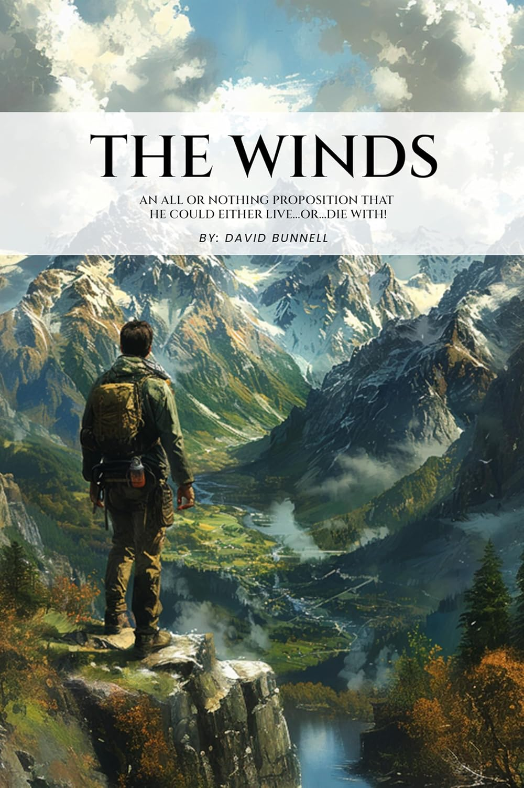

An all-or-nothing proposition that he could either live, or die with.
Deep in the Wind River Mountains of Wyoming, a man returns to the place that broke him. Decades after a tragedy he has never spoken of, he is forced back into the granite peaks and unforgiving wilderness that hold every answer he has spent his life avoiding. As old wounds resurface and the mountains themselves seem to close in, he must decide whether the truth is worth the reckoning it demands, or whether some things really are better left buried in the wind.
I could feel the Wyoming wind. The descriptions of "the Winds" are breathtaking. The author writes about the granite slopes and the Shoshone heritage with such respect and vividness. It is not just a setting, it is a character that demands a reckoning.
A slow-burn mystery with a big heart. It starts as a family drama and shifts into something much more atmospheric and mysterious.
Great book. The story keeps you on the edge of your seat. With the author's vivid descriptions and his storytelling talent the book takes you to Wyoming and on your own personal journey to reflect on life and challenges.